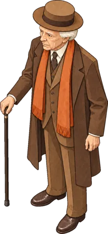
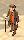

Ten of Wright's buildings and Wright himself are hidden in this town. Find all eleven.


The small one is how he really looks in the picture, enlarged. Look for the brown hat, the long rust scarf and the cane. He is no bigger than anyone else, so zoom in.